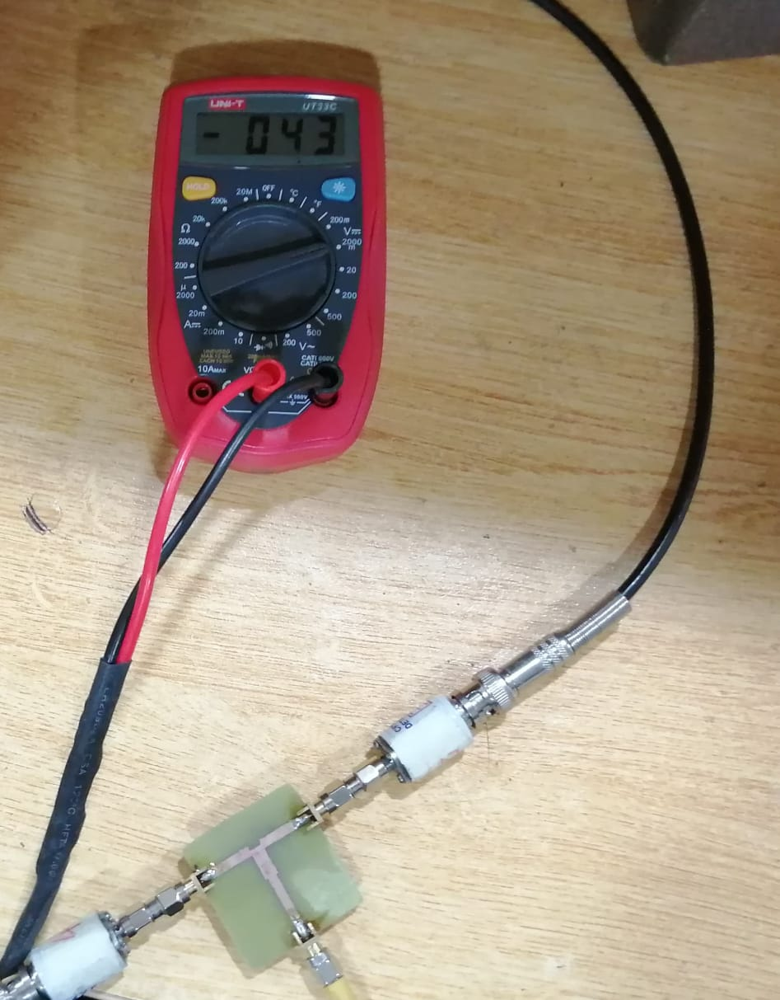
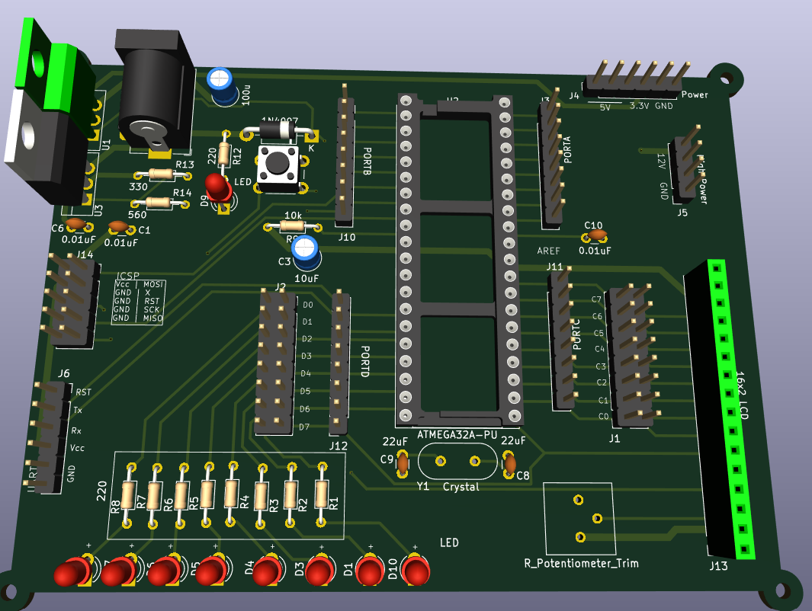
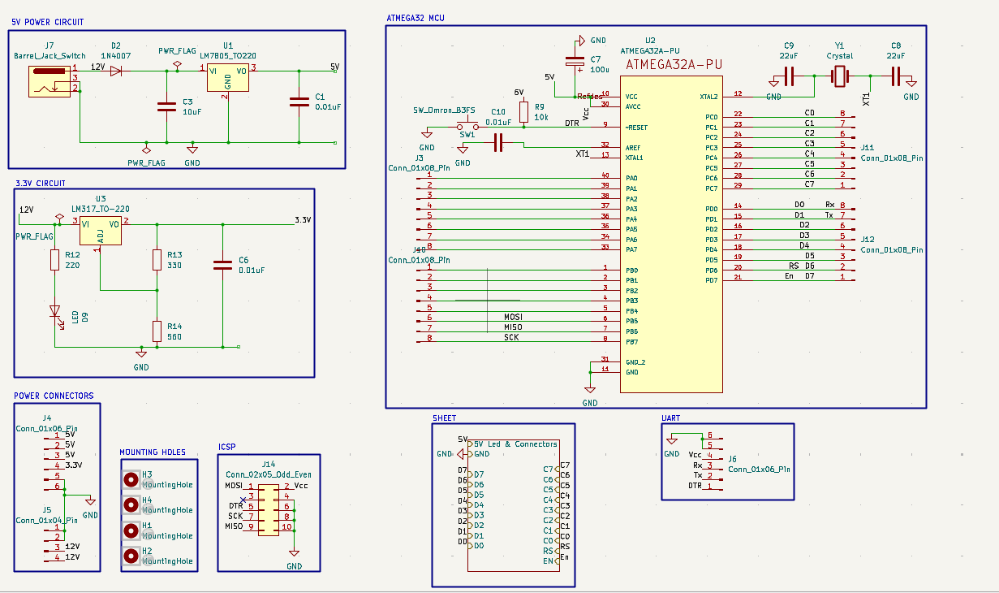
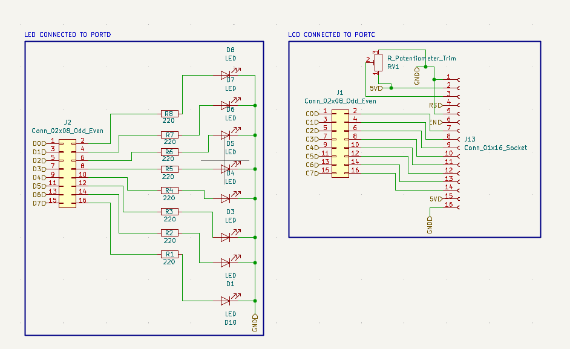
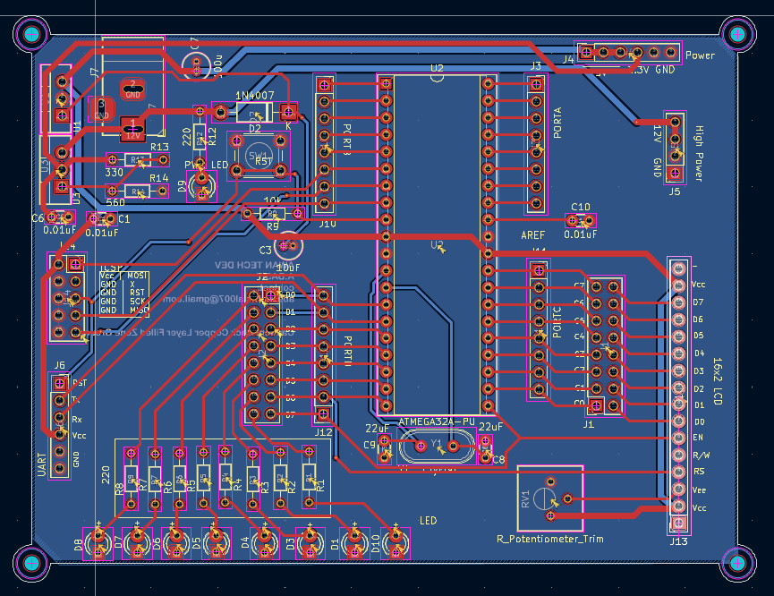

A 5 GHz microstrip Tee power divider using quarter-wave transformers for impedance matching, simulated in Ansys HFSS and fabricated on FR4.





This project involved the design, simulation, fabrication, and testing of a microstrip Tee power divider optimized for 5 GHz applications, using quarter-wave transformers for impedance matching. The design was created and simulated in Ansys HFSS and then fabricated on an FR4 substrate.
After replacing faulty apparatus during initial trials, correct measurements showed nearly equal power division: ~1.5 V and ~1.4 V at the respective output arms from a ~3.16 V input, confirming balanced operation.
The integration of quarter-wave transformers effectively minimized return losses and achieved balanced power division. Future improvements could explore Wilkinson dividers for enhanced isolation or unequal split ratios for advanced RF applications.